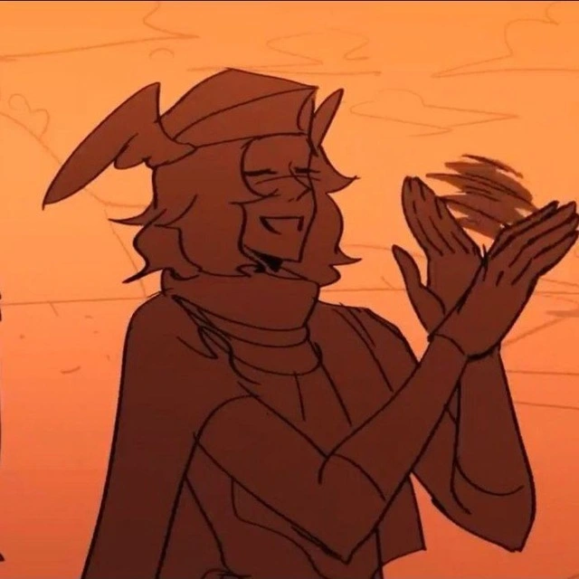

Друзья

Я интроверт, и не особо хорош в общении.
Впрочем, есть немногие, но дорогие мне люди.
Немного о них:
-
Игорь - друг из Discord, живёт в Якутии, разделяет мои интересы в играх.
-

Настя - одноклассница, была хорошим и единственным друг в 10-11 классах. Сейчас учится в СГПИ.
-
Денис - друг из Discord, играет вместе со мной и Игорем.
Данные друзей
| Имя |
Телефон |
Email |
| Игорь |
Разбитый |
Gmail |
| Настя |
Сенсорный |
Yandex |
| Денис |
Дарагой |
Gmail |